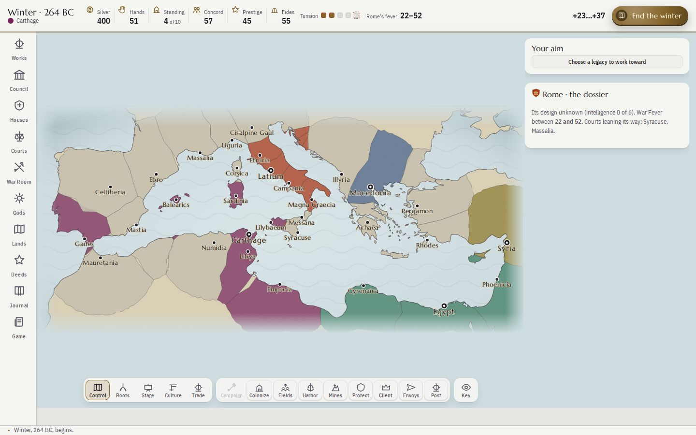
Carthago
𐤒𐤓𐤕𐤇𐤃𐤔𐤕Two rival republics, one sea, and a history that changes only when you change it.
A field guide for your first chronicles: the screen, the year, the crisis, the Council, the works, the courts, the war, the gods, and the long judgment of history. Fifteen grand strategies for both republics, a threat chart for every rival, and the secrets the histories keep.
Welcome to the Middle Sea
It is 264 BC. Carthage rules the sea; Rome has just finished swallowing Italy. Between them lie Sicily, Sardinia, Iberia, a dozen free peoples, and three Greek kings watching to see who blinks.
You speak for one republic. You do not command it. Councils vote, consuls follow their own agendas, great families rise and fail, and the rival across the water has a plan of its own. What you control is where the republic's attention, money and good name go, winter after winter. Carthago is a game about spending those three things well.
Nothing is scripted. There is no fixed First Punic War, no Hannibal on a date, no guaranteed fall of Carthage. The crises that arrive are the ones your choices made likely; the wars are the ones someone chose. Rome can lose. Carthage can win. Both can still be standing, at peace, in 146 BC.
When the chronicle ends, the historians judge it: whose lands, whose tongues, whose gods, whose law, and whose good name survived into the centuries after. Then the story runs forward to the year 2000, and you see the world your choices made. You can also set yourself an aim (a particular legacy) and chase it.
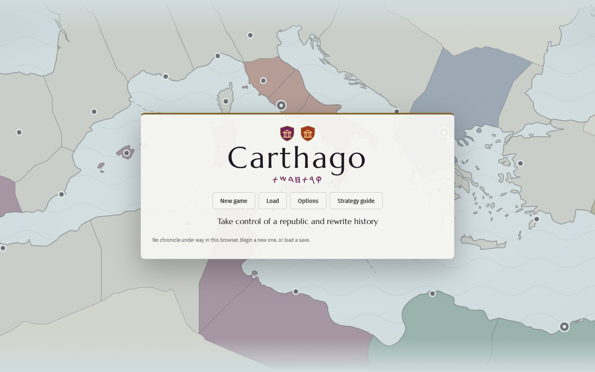
Choosing your game
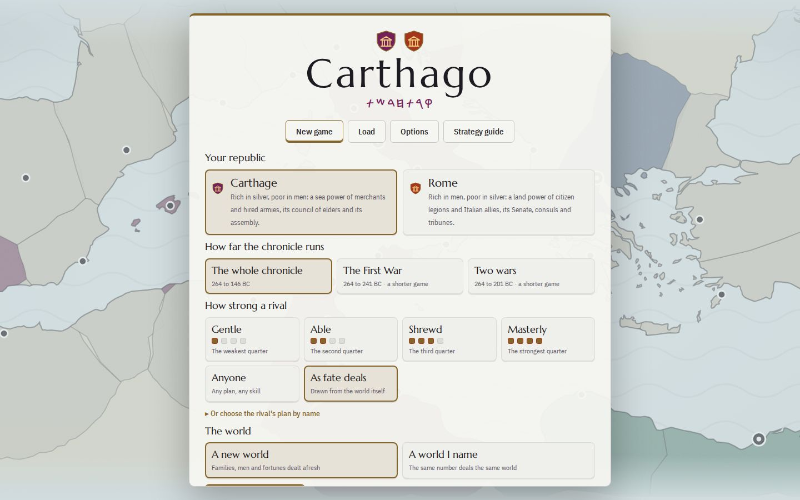
How far the chronicle runs
- The First War (264–241 BC): a short game, about an evening. The best way to learn.
- Two wars (264–201 BC): long enough for a generation of works to pay off.
- The whole chronicle (264–146 BC): the full game. Colonies, cultures and dynasties have time to matter.
How strong a rival
- Gentle / Able / Shrewd / Masterly: the rival's plan and skill are drawn from the harness's own rankings, weakest to strongest.
- Anyone: any plan, any skill.
- As fate deals: drawn from the world itself.
- Or open choose the rival's plan by name to face a particular strategy (Chapter 13).
For your first game, play Carthage in the First War against a Gentle rival. Carthage starts rich and the short scenario ends before your mistakes compound. Your second game: the same, as Rome.
Reading the screen
The map is the room. Everything else floats over it, and every number on it can tell you why it is what it is: hover it.
- 1The season and the year. Winter is when you decide; the sailing season is when armies march and fleets sail.
- 2Your instruments. Silver, Hands, Standing, Concord, Prestige, Fides. The small arrows show what changed since last winter. Click one to open the view it belongs to.
- 3The rivalry. Tension between the republics, and the rival's War Fever as a rumor.
- 4End the winter. The bronze seal. It waits while a crisis or an embassy is unanswered.
- 5The rail. Seven views: Works, Council, Houses, Courts, War Room, Gods, Lands, plus Deeds, Journal and Game.
- 6The map. Hover a land for its owner, roots, wealth and culture. Click it to see what you can do there.
- 7The map bar. Map modes on the left, lenses (actions on the map) in the middle, and the key.
- 8The outliner. What needs you, your aim, and the rival's dossier.
- 9The ticker. The last things that happened. The Journal keeps them all.
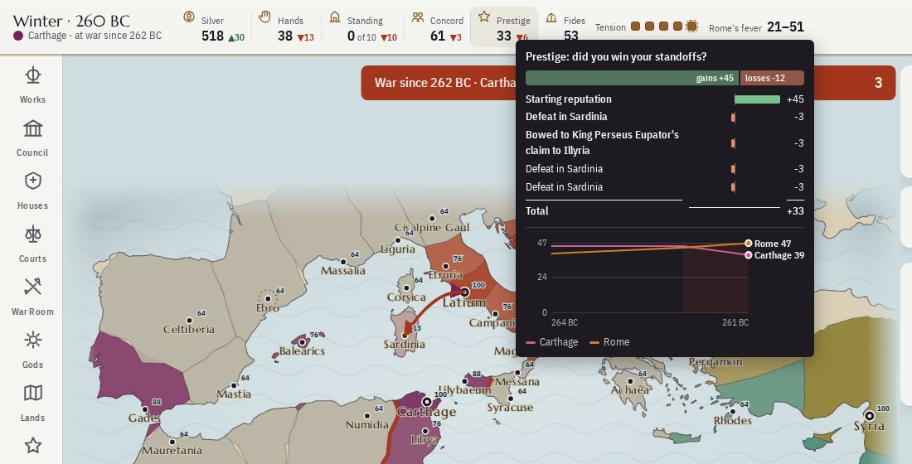
How each system works NEW
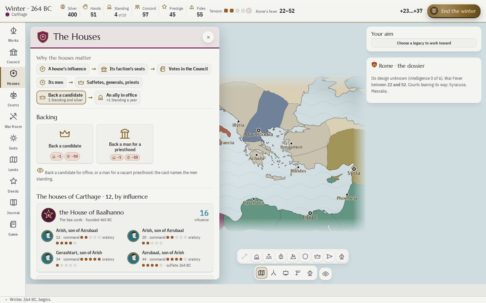
The map modes


Acting from the map: lenses

Lenses are the fastest way to answer "where can I do this?" Before you found a colony or protect a people, flick through the lenses to see your options at a glance.
Your first winter
A walkthrough of a sensible opening for Carthage. None of it is required; all of it teaches the rhythm of the year.
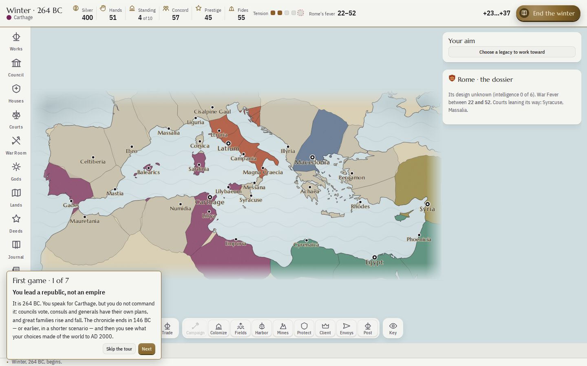
Look before you spend
Open the Council and read the Counsel: each faction's leader urges a grand strategy and names what it would have you do this winter. You don't have to follow any of them, but they show you what the factions want. Then glance at the outliner: is anything urgent?
Set the works purse
Open Works. The purse is the share of your income the steward may spend on works. Half is a sound start: enough to build, with silver left in the treasury for surprises.
Begin one work
Pick a work tile, say Improve the fields, and choose a land in the card. The card's foot shows the price by the year and how many winters it takes. Press the seal. The steward pays it each winter from now on.
Make a friend abroad
Open the Courts. A free people who already lean your way (the Numidian kings often do) can be taken under protection. It costs a little Fides now; over the years they lean toward you and will accept you as patron.
Keep a Standing in reserve
Standing carries over from winter to winter. A crisis may ask for a public gesture, and a close vote may need lobbying. Don't spend your last point on something small.
End the winter
Press End the winter. The sailing season plays out: storms, campaigns, the rival's moves. Then press it again to reach the next winter, and the next decisions.
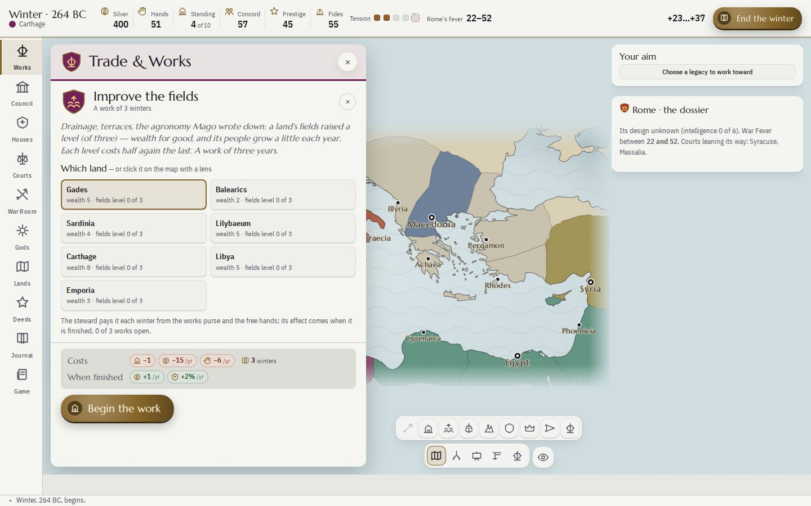
Three works at most can be under way. A work that isn't paid stalls, and after two unpaid winters it starts to lose its progress. Don't open more works than your purse can carry.
What you spend
Three things flow through your hands every year, and three reputations follow you everywhere.
From 0 to 10, earned each winter. Every action costs Standing (war and a treaty cost more), and so do lobbying a faction and persuading a consul. It carries over, so a quiet year buys a busy one. You earn more when the city is united (high Concord) and when your ally holds office.
Income from your lands, the sea trade, clients' tribute and mines. Works, wages and many actions draw on it. The treasury never goes below zero: Carthage runs up arrears to its mercenaries instead, and Rome's great houses lend, to be repaid by the citizens.
The year's work of the people you rule. Raising the army takes hands first, and more than you'd expect at the higher levels. What's left builds the works. Rome's Italian allies lend it hands; Carthage's hired companies stand in for its own people.
The three reputations
| Instrument | What it is | Raised by | Lowered by |
|---|---|---|---|
| Concord | How united your city is | Fear of the rival, games and festivals, the people's god honoured, a war that starts well | Bitter votes, overruled factions, long wars, defeats |
| Prestige | Whether you win your standoffs | Stakes won, the rival giving way, peaces on your terms, deeds | Conceding, abandoning friends, losing wars |
| Fides | Whether you keep your word | Standing firm on just claims, kept promises, historians, deeds | Threats on weak claims, arming or warring without a just claim, broken protection |
The watching powers (the Greek courts, the kings, the free peoples) lean toward the republic with the better Fides and Prestige. Leaning powers become clients, allies in war, and friends at the peace. Your reputation is your foreign policy.
How to get more of each NEW
Every resource has a few big levers and a lot of small ones. These are the big ones. To see exactly where yours stand this winter, hover the resource's number in the top bar: its tooltip lists every source, and the line underneath shows its history.
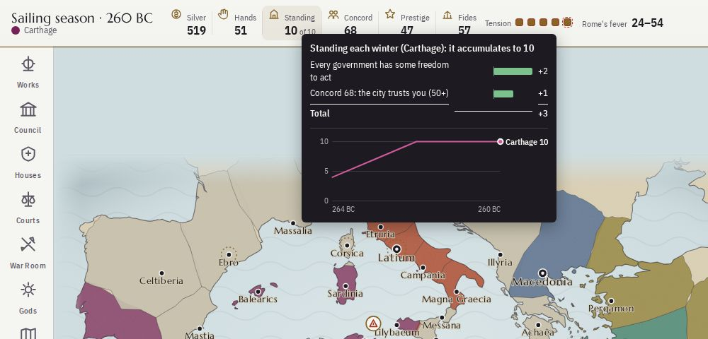
Standing
Best lever: Concord. A trusting city (Concord 50 or more) earns you an extra point every winter, and a united one (75 or more) another. A divided city (below 25) costs you one.
Also raised by:
- An ally in office. Back a candidate from a friendly faction before the election (in the Houses). While he serves, he earns you a point every winter.
- Two deeds: A Vote Carried (win any vote by lobbying, the easiest deed in the game) and The United City. Each earns a point every winter for the rest of the chronicle.
- A general ruling by decree also adds one. It is a bad bargain.
Drained by: every action (war and treaties cost two), lobbying a faction, persuading a consul, a public gesture in a crisis.
Save it: it carries over, up to ten. Past ten it is wasted, so spend before you hit the cap (the outliner warns you). As Rome, let the consuls act on their own for free, and persuade them only when it matters.
Concord
Best lever: content factions. Give them the votes they want (the Counsel names them), and avoid overruling them in bitter votes.
Also raised by: games, festivals, honouring the people's god (Tanit, Ceres), a light tax, a victory or a triumph in a crisis, and some fear of the rival (Tension, or a war that begins).
Drained by: a heavy tax, high mobilization, humiliations, bitter votes, and the weariness of a long war.
Silver
Best lever: build. Fields, harbors and mines raise your lands' yield for good, so a works purse set to half or more pays for itself over a long game.
Also raised by: more lands, sea trade between your ports, trading posts abroad, tribute from loyal clients, colonies, the Egyptian grain treaty, secret routes beyond the Pillars (Carthage), booty and indemnities in war, a heavy tax.
Drained by: garrisons, mobilization, mercenaries' wages (Carthage), works, and most actions. A war also cuts sea trade.
Hands
Best lever: people. Hands come from the people you rule, and fields make a land's people grow.
Also raised by: more lands, loyal Italian allies (Rome), hired companies (Carthage).
Drained by: mobilization, much more so at the higher levels, and works under way. A thin census (Rome) also means fewer.
Prestige
Best lever: win your standoffs. Take a crisis's stake, make the rival give way to a demand, win battles and take lands.
Also raised by: a peace on your terms, refusing a king's claim, warning a king away, deeds, an assertive stance (a little each winter).
Drained by: conceding, defeats, lost clients, abandoning a friend, bowing to a king, a conciliatory stance.
Fides
Best lever: stand firm on a just claim. Do it again and again, and never threaten on a weak one.
Also raised by: a historian (a work), kept promises, deeds.
Drained by: ultimatums on weak claims, arming or declaring war without a just claim, a demand you don't back with war, abandoning a people under your protection, a ruler by decree. Taking a people under protection costs a little up front.
The most reliable way to act more each winter is a chain: keep the factions content → Concord above 50 (then 75) → more Standing, plus back a friendly candidate → an ally in office → more Standing. Early on, carry one vote by lobbying for the A Vote Carried deed: its extra point lasts the whole chronicle.
Concord is fed by fear of the rival. A little tension at the right time can unite a divided city, and total peace can let your factions turn on each other. The Necessary Enemy strategy (Chapter 12) is built on this.
The crisis
Mamertines appealing to both. A merchant killed in Ostia. Saguntum. When the two republics collide, you choose a posture, and so does the rival, in secret.
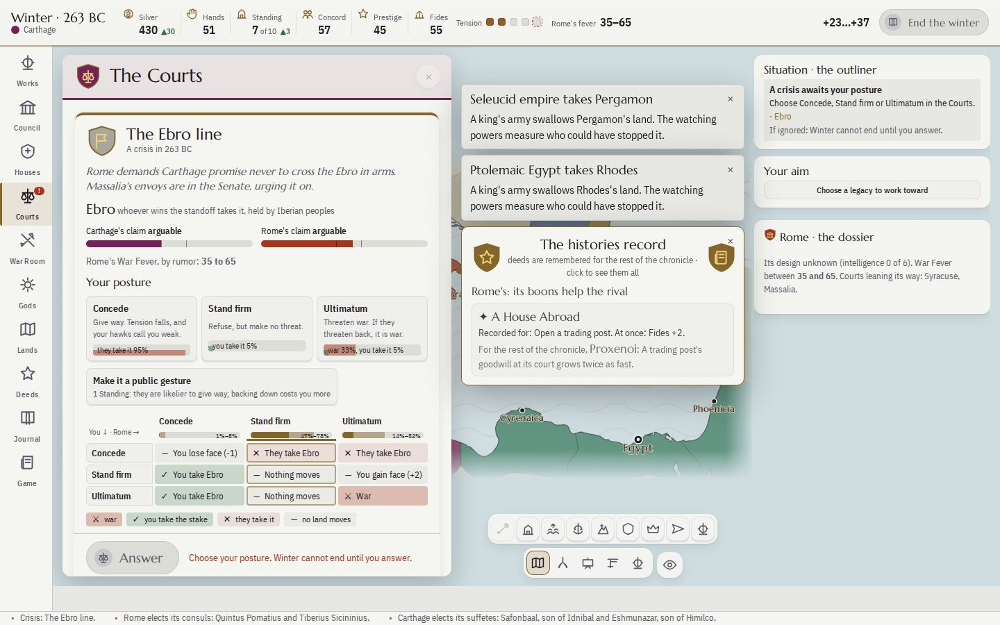
The three postures
- Concede: give way. Tension falls, the stake goes to them, and your hawks call you weak.
- Stand firm: refuse, but make no threat. Against a concession you win; against a threat, it's a stare-down.
- Ultimatum: threaten war. If they threaten back, or stand firm when Tension is high, it's war.
What to read before you choose
- The claims. Strong, arguable or weak. An ultimatum on a weak claim costs you Fides whatever happens; standing firm on a strong one earns it.
- The rumor. Higher War Fever makes the rival likelier to threaten. Trading posts narrow the rumor.
- The odds bar on each posture: the chance of war, and of the stake moving.
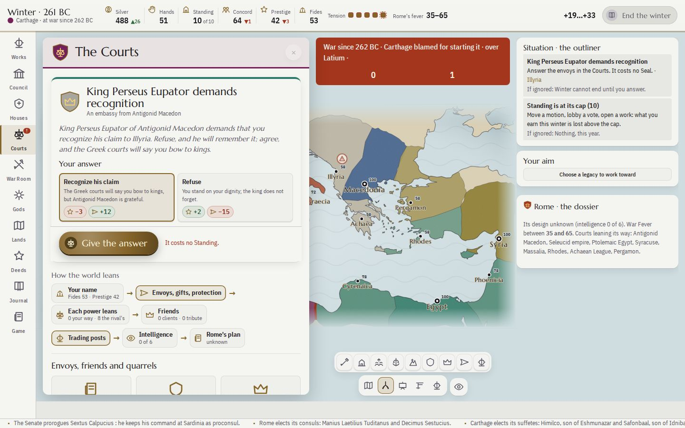
A fig in the council, a fold of the toga: making your posture public costs a Standing and makes the rival likelier to give way. The catch: if you then back down, it costs you more Prestige. Gesture when you mean it.
Tension is shared and climbs with every stare-down. Once it's high, an ultimatum that meets a firm refusal is war. If you're not armed, don't threaten at high Tension. Cool things first with a friendship treaty, or by conceding something small.
A quarrel remembers. Every land you took by force, every threat on a weak claim, every refused demand is added to the claims on that stake. Pick your quarrels early and patiently, and when the big crisis comes your claim will be the strong one.
The Council and the houses
A republic is a room full of people who want different things. The Council is where you find out which of them you need.
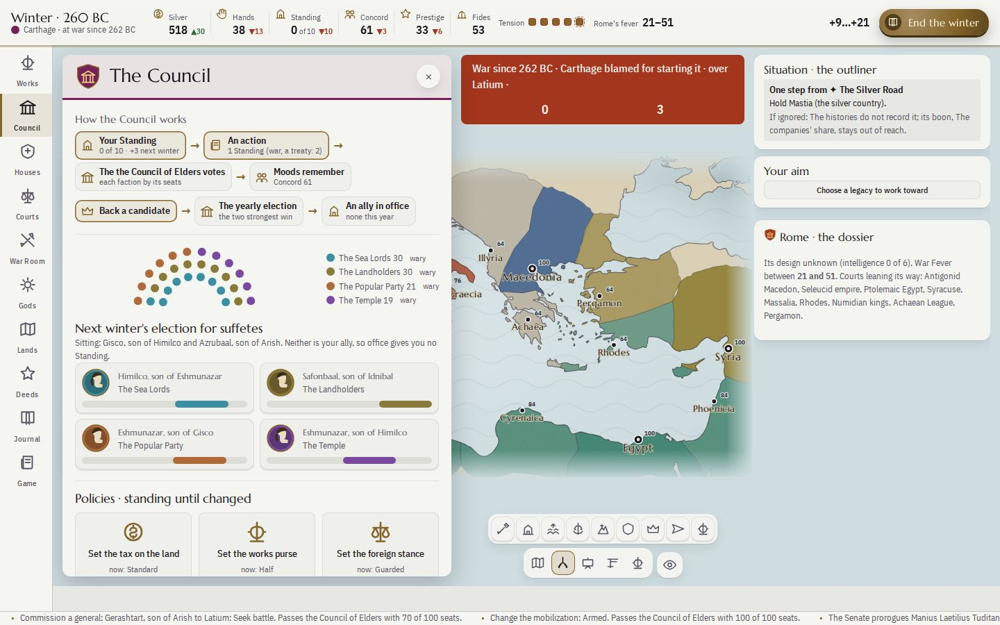
Votes and lobbying
Most actions are yours to take. Some are contested: war, mobilization, the tax, the stance, a colony, a treaty. These go to a vote. The card shows who is for, who is wavering and who is against, and a Lobby button for each faction. Lobbying pushes a faction your way for a Standing, but it resents being pressed.
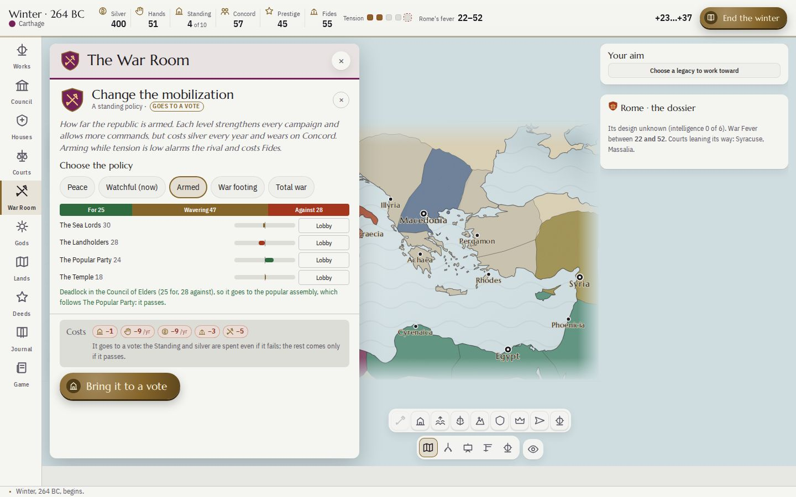
The Council of Elders decides; if it deadlocks, the question goes to the popular assembly, which follows the Popular Party. Suffetes are elected yearly and cannot serve twice running. Any man of your houses aged 28 or more can be given a command, and a beaten general answers to the Hundred and Four.
The Senate votes, and a tribune can veto. Two consuls are elected each year, and each acts on his own initiative: you'll see what he means to do, and you can spend Standing to persuade him otherwise. Only consuls command armies, unless the Senate keeps a winning general in command as proconsul.
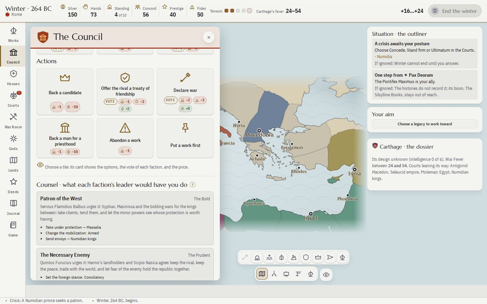
The houses
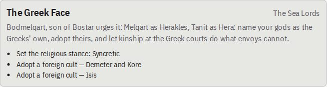
Back a candidate from a friendly faction. An ally in office earns you Standing every winter. For Rome it matters twice: consuls are your only generals, so back the ablest soldier before a war.
Works and lands
Fields, harbors, mines, temples, colonies: the slow investments that compound into a richer, more populous, more rooted republic.
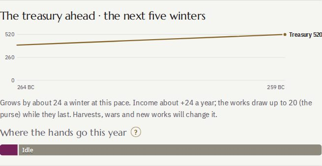
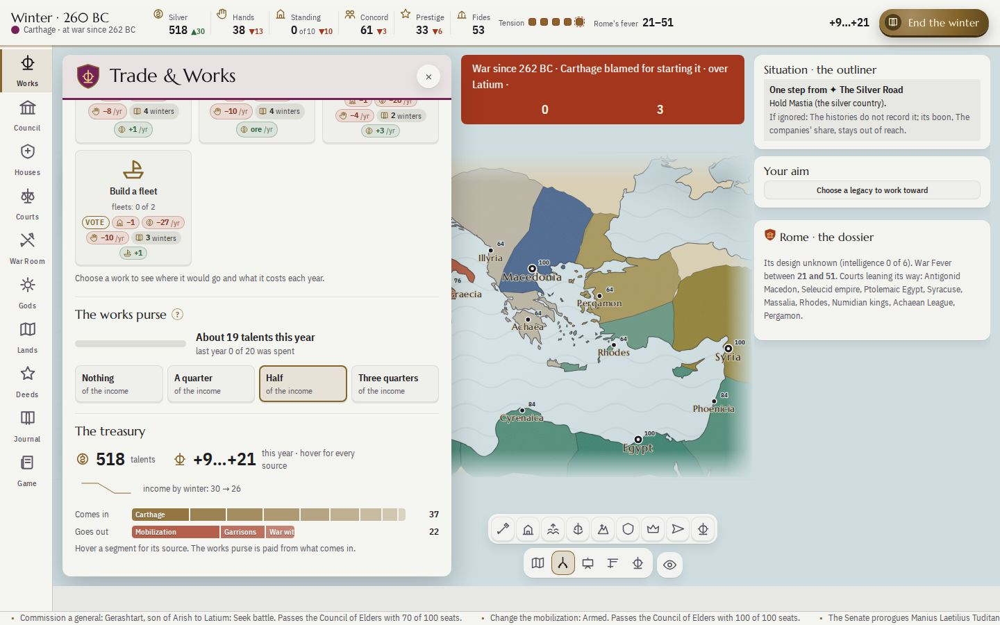
How works get paid
You set the purse (nothing, a quarter, half, three quarters of income). The steward pays the works in order, the one you pin first, from the purse and the free hands. A work advances by what it was paid. When it's finished, its effect arrives: a temple honours its god, a colony plants settlers, fields raise a land's wealth for good.
The works
- Fields: wealth for good, and the land's people slowly grow.
- Harbor: wealth for a port.
- Mines: work a land's ore (the Iberian silver country above all).
- Colony: settlers turn a land's law and tongue toward yours for generations, and deepen your roots.
- Temple, games, historian, envoys, a voyage, a fleet.
Fields grow people; people give hands; hands build more works. Colonists build their own, so development on your own colony costs less silver. And you can build fields and harbors in a client's land: its tribute rises with its wealth, and it leans toward you for every level you build. That is how you turn a friend into a pillar.
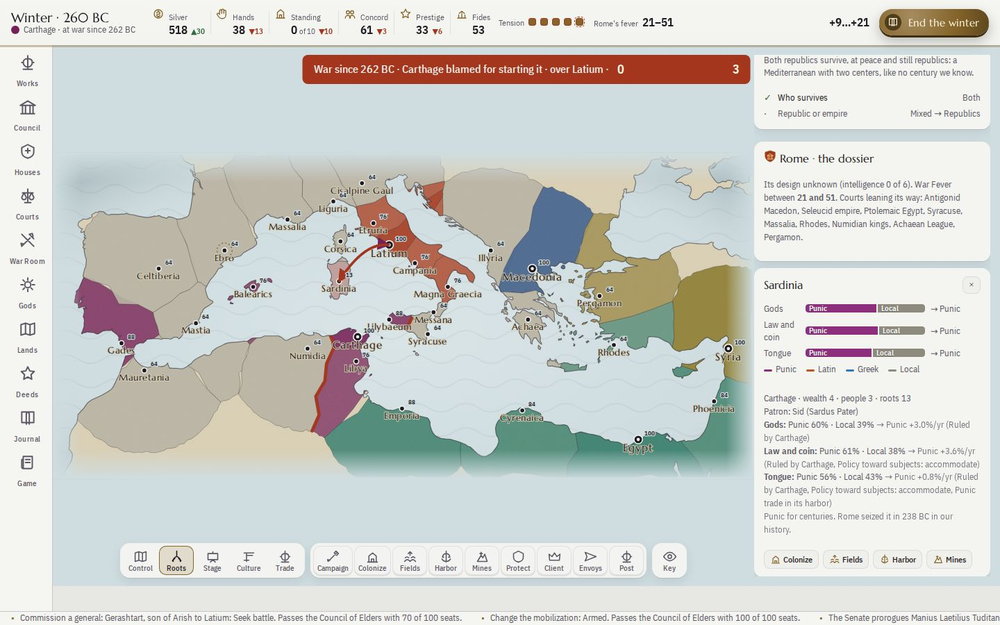
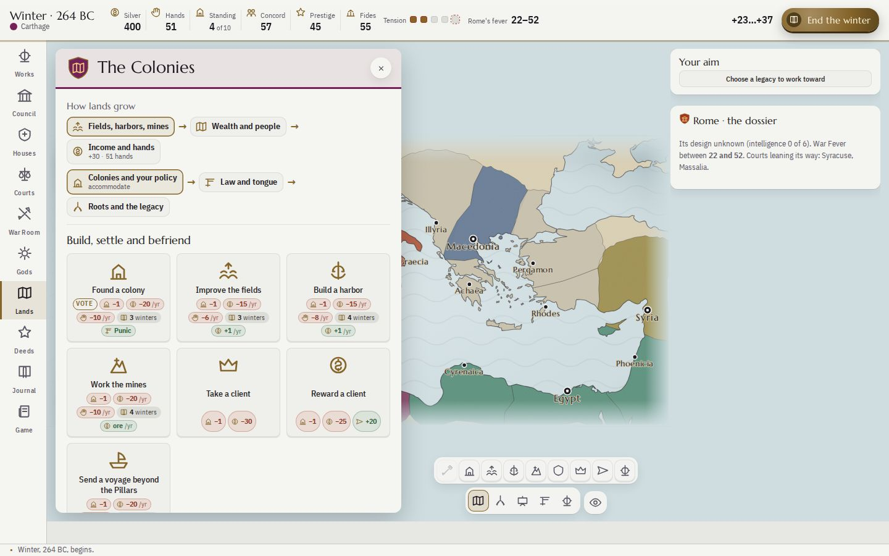
War ravages works. A land that is harassed, besieged or in revolt loses half the progress of the work on it. Build in your heartland and your safe islands first; build on the frontier in peace.
A work in a client's land is a bet on their loyalty. If the client breaks away, the work under way is lost, and the levels you finished stay with the land. Tend the friendship (reward them, send envoys) while you build.
The courts of the world
Nine watching powers, three great kings, a dozen free peoples. None of them act on your say-so, but all of them are listening.
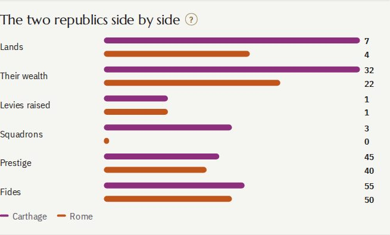
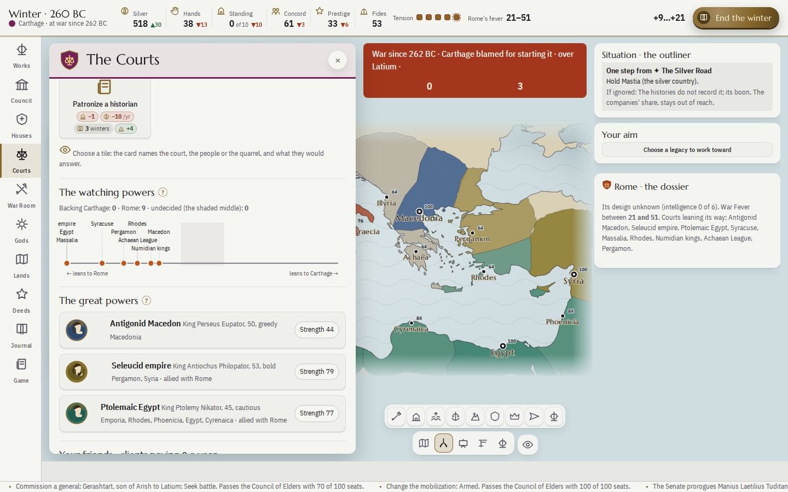
Friends
- Take under protection: a public promise to a free people. They lean to you over the years. But if you give up their land in a standoff, or let a king take it, the world sees your word was empty.
- Take a client: a minor power that accepts you as patron pays tribute while it's loyal. It accepts for good reasons: your standing, your good faith, a border, your armies nearby, your protection.
- Reward a client: loyalty fades each year unless it's tended.
Influence
- Send envoys to move a court your way (a mission of two years).
- Patronize a historian: Fides, the long way.
- Open a trading post: trade, and ears. Enough posts and your merchants narrow the rumor of the rival's fever, then learn its plan.
- Demand redress: a formal demand over a quarrel. Refused, it strengthens your claim, but it's a commitment: answer with war within a few years or lose face.
- A treaty: a commercial treaty, or friendship to lower Tension.
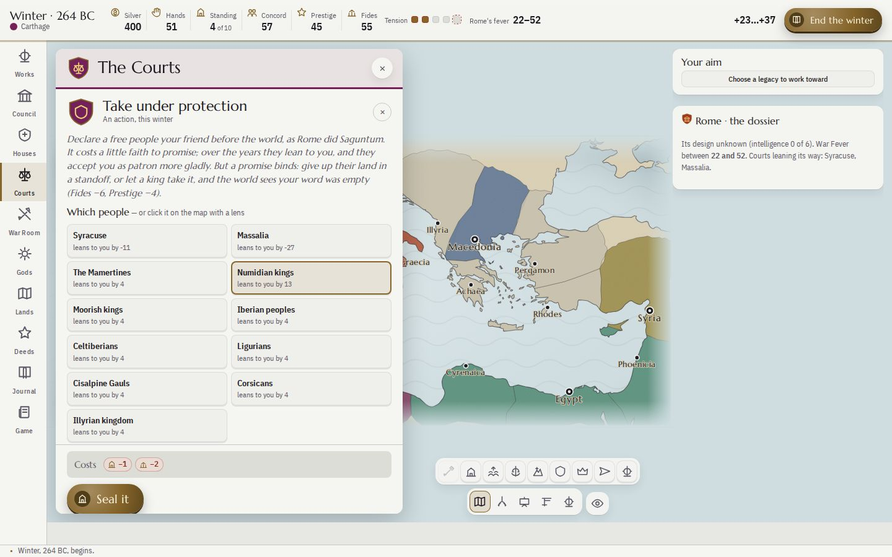
If both republics protect the same people (Saguntum, Numidia, Massalia, Syracuse, Messana), a crisis over their land can fire in which whoever gives way breaks a promise. This is how the Second Punic War began. Protect a people the rival already courts only if you're ready to stand.
Macedon, the Seleucids and Egypt fight their own wars, swallow minor powers, and can join yours if they lean far enough your way. Hannibal's Alliance is built on this. Watch their dials in the Courts, and remember that a friend a king conquers while you stood by is a promise broken.
War
You never move armies. You raise them, choose the men who lead them and give them orders; the war is theirs to win or lose. The peace is yours.
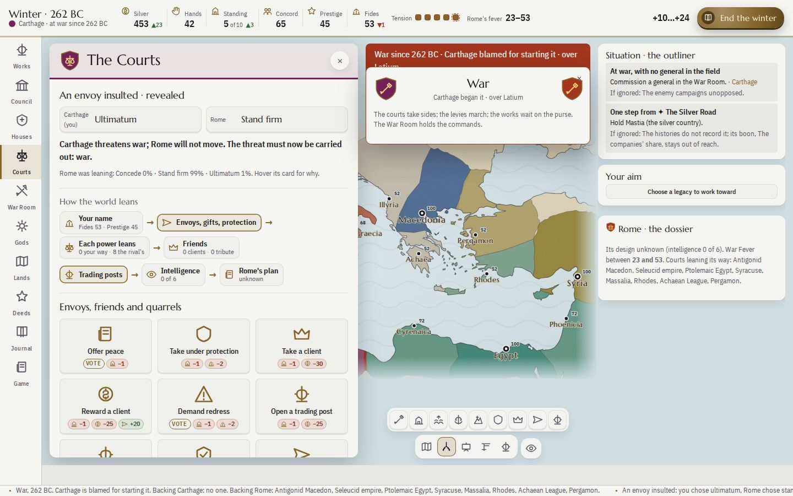
Mobilization
Five footings: Peace, Watchful, Armed, War footing, Total war. Each level allows more commands and makes every campaign stronger, and costs more: upkeep, and hands taken from the fields. Arming without a just claim while Tension is low alarms the rival and costs Fides.
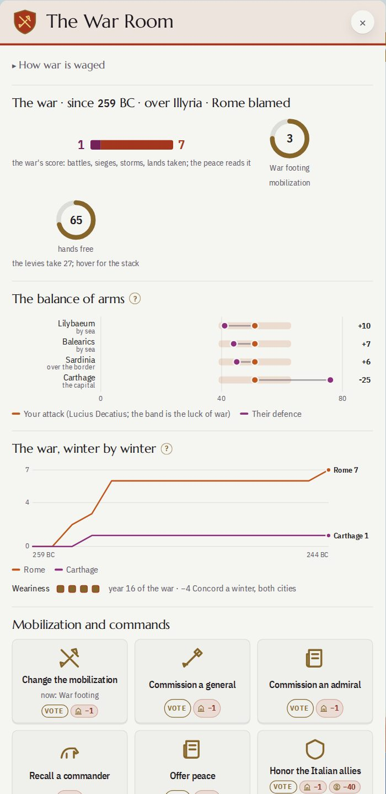
Commissions and mandates
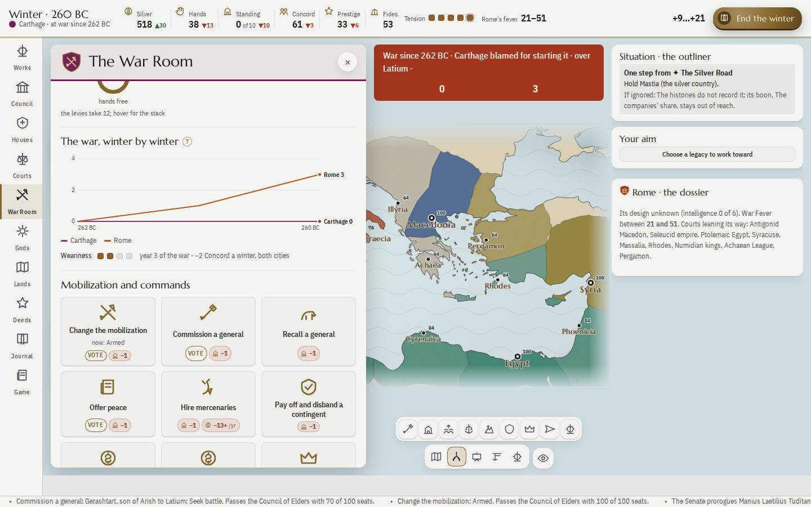
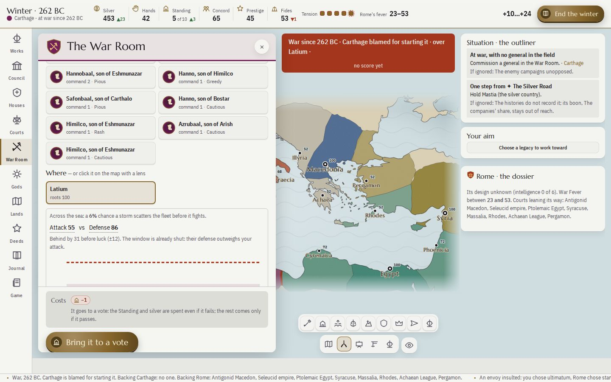
- Seek battle: meet their army in the field. Victories win the war's score and can take a land.
- Besiege: the only way to take a capital. Slow and costly.
- Harass: raid a land, ravage its works, bleed their economy.
- Hold: defend one of your own lands on the frontier.
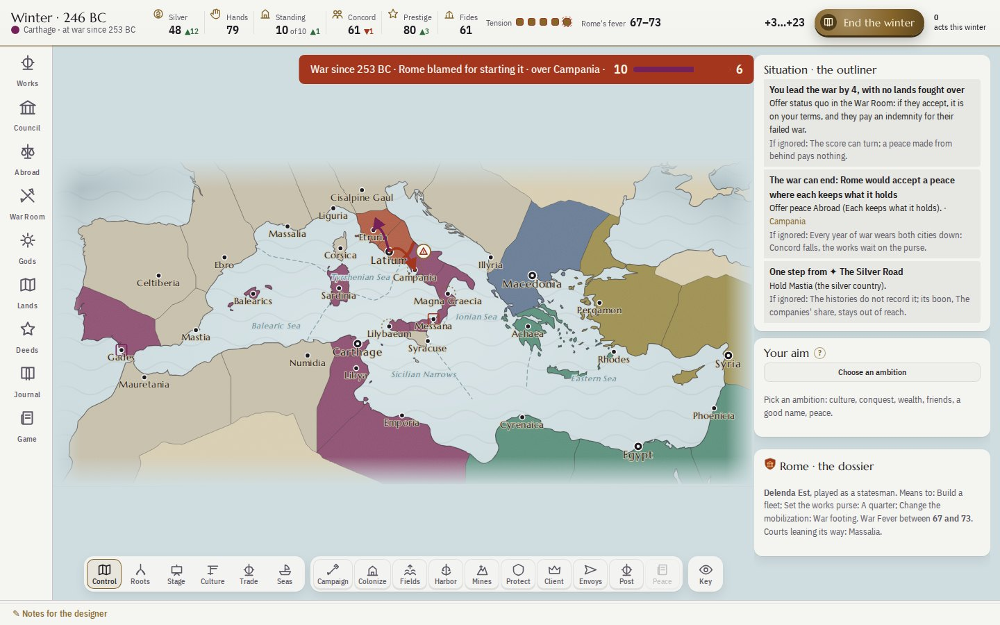
The peace
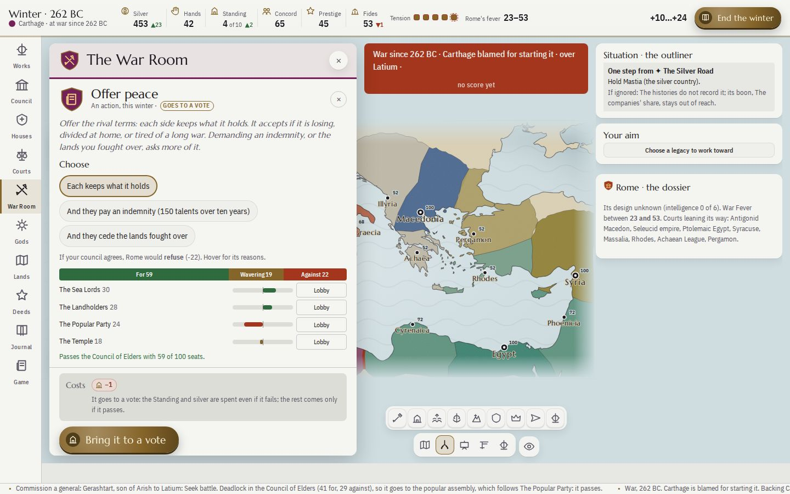
If you lead the war clearly and have fought over lands they still hold, even a modest offer is accepted on your terms: they cede those lands. The theatre is what you actually campaigned in, so if you want Sicily at the peace, fight in Sicily.
Weariness grows every year of war, Concord frays, works stall, and the rival's allies can join. Most wars are won in their first few years and lost in their last. Take your gains and make peace while you lead.
The gods and the long memory
The gods never act. But the people who love them vote, fight and remember, and what the lands worship in AD 1 is part of your legacy.
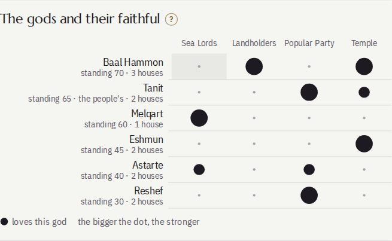
- Honour the people's god (Tanit, Ceres) to keep Concord; neglect frays it.
- Festivals and temples please the factions that love a god and lift the houses devoted to it.
- The stance: traditional, tolerant or syncretic. Syncretic lets your gods be named as the Greeks' own, which the Greek courts like.
- Adopt a foreign cult: shared gods make courts lean your way, but the pious factions may object.
- Priesthoods are for life. An augur can halt a vote; Rome's Pontifex can lengthen the year to keep a good consul in office.
- Rome's prodigies: fear breeds omens. Expiate them.
- Carthage's tithe to Tyre: an old duty to Melqart, noticed in Egypt.
- Evocatio (Rome): call a besieged city's gods out before you take it.
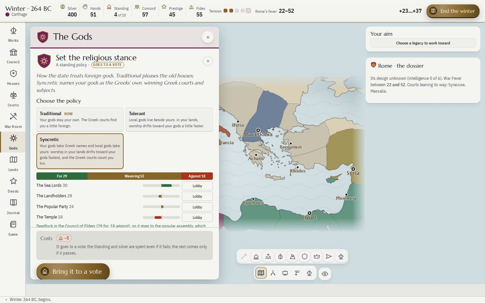
Culture: the slowest war
Every land has its gods, its law and its tongue, each a mix of Punic, Latin, Greek and local, drifting at its own pace under its ruler, its colonists and its clients. The Lands view's policy toward subject peoples sets the tone: Assimilate (fast, resented), Accommodate (slow and steady), Blend (new mixed peoples and cults grow wherever cultures meet, and they hold to you best of all).
The legacy weighs people, not territory. A small, crowded, Punic-speaking land counts for more in AD 2000 than a large empty one. Fields that grow people and colonies that teach them your tongue are the most durable investment in the game.
Playing Carthage, playing Rome
The two republics play by different rules because they were different places: one rich in silver and poor in men, the other the reverse.
Carthage
Rich in silver · poor in men · mistress of the seaStrengths: the richest treasury, the best harbors, the secret sea routes beyond the Pillars, a navy that fears no one early on.
Weaknesses: few citizens, so armies are hired at the mercenary markets. Companies want wages every year; unpaid, they desert, and in the worst case they rise in revolt (the Truceless War).
Tools: the merchant houses' loan in wartime; a general his army follows (a winning commander's companies don't desert); the people defend their own walls.
Watch: Libya. A war that squeezes your subjects can turn your heartland against you.
Rome
Rich in men · poor in silver · the Italian confederacyStrengths: the census. Citizen legions cost little silver. The Italian allies lend hands and levies. Veteran colonies plant Rome on every land it takes.
Weaknesses: a thin treasury, weaker at sea, storms, and consuls with minds of their own who change every year.
Tools: the great houses lend in wartime; prorogation keeps a winning general; honours for the allies keep them loyal.
Watch: the allies' loyalty. After a great defeat, allies can defect, and a thin census means no new legions.
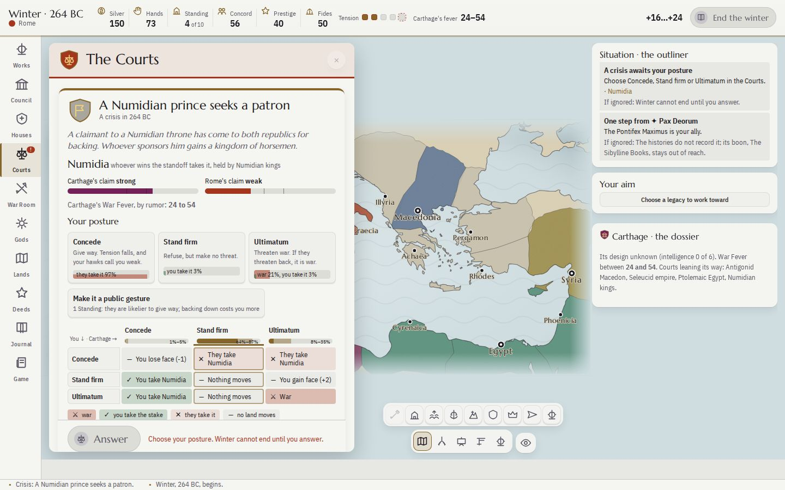
Your silver is your army. Keep a war chest before you threaten anyone, pay the companies before the peace, and never let arrears pile up in a long war.
Your men are your silver. Strike hard, take the lands you fought over, then give the census a generation of peace to refill. Keep the allies honoured, especially after a defeat.
Fifteen grand strategies
The rival plays one of these for the whole game. Your faction leaders urge them on you as Counsel. Each is a real path through history, and each can win.
Every strategy below is a playbook: the idea, the signature moves, and what to watch. Purple is for Carthage, red for Rome, bronze for either side.
The Barcid Gamble
Carthage · Hamilcar and Hannibal in IberiaWin the silver country in the standoffs, plant Punic colonies, and let the mines pay for the army that guards them.
Moves: protect the Iberians, work the mines, colonize Gades and the Iberian coast, sail beyond the Pillars. Watch: Rome's Ebro line and Saguntum.
The Sea Wall
Carthage · Hamilcar on EryxHold the walls with your best man, let Rome's consuls cross the sea and break on them, and take an indemnity when its allies waver.
Moves: harbors, a fleet, hold orders on the frontier, patience. Watch: don't let Rome choose the battlefield.
Hannibal's Alliance
Carthage · Philip V and HannibalCourt Macedon with envoys and a Greek face for your gods until it leans your way, then fight the war it joins.
Moves: envoys to Macedon, the syncretic stance, patience until the king's dial swings. Watch: time the war to the alliance.
Silver in a Burst
Carthage · nobody lends to CarthageStockpile in peace, strike for a few years with hired companies and a hired Greek, take an indemnity, and pay the companies off before the peace.
Moves: a big treasury, the best companies, a short war. Watch: arrears. A burst that runs long becomes a revolt.
Patron of the West
Either side · Syphax, Masinissa and the kings betweenTake clients, tend them, and let the minor powers see whose protection is worth having.
Moves: protect, then take clients; reward them; build fields in their lands; envoys to the kings. Watch: loyalty fades. Tend it every few winters.
The Necessary Enemy
Either side · Hanno and Scipio Nasica agreeKeep the rival, keep the peace, trade with the world, and let fear of the enemy hold the republic together.
Moves: a conciliatory stance, a light tax, a big works purse, fields and harbors, trading posts. Watch: Concord without a threat to fear.
The Latin Name
Rome · the Latin coloniesSettle citizens, honour the allies, and draw land, law and levies from one network.
Moves: colonies through Italy and beyond, honours for the allies, the plebs kept content. Watch: colonies need three work slots' worth of patience.
Pax Deorum
Rome · religion as state machineryExpiate every prodigy, honour Jupiter, keep the Pontifex a friend, and lengthen the year to keep a good consul in command.
Moves: expiations, festivals, back your priests, then fight with a consul who stays. Watch: the omens after defeats.
Strangle the Markets
Rome · Rome in Numidia and SpainCarthage buys its armies, so take the peoples it buys them from as clients or as stakes, and leave it slingers.
Moves: protect and befriend the Numidians, Iberians, Celtiberians, Balearics; bully in their crises. Watch: it pays off slowly; be patient.
Blood, Spent in Short Wars
Rome · 241 and 201 BCStrike hard for a few years, take the lands fought over or an indemnity while the census holds, then a generation of peace to refill it.
Moves: arm, back soldiers for consul, fight where you want land, dictate the peace. Watch: the census.
Fides for the Greek Audience
Rome · Fabius Pictor writing in GreekKeep faith, never threaten on a weak claim, and let the courts that weigh good faith decide the war of reputations.
Moves: historians, envoys, firm only on just claims, no pretexts. Watch: Prestige can lag while Fides soars.
Evocatio and the Afro-Roman Bridge
Rome · Juno of Veii, Caelestis of CarthageCall out a city's gods before its siege, hold what you take, and let Africa blend rather than be scoured.
Moves: war into Africa, evocatio before sieges, colonies and the Blend policy there. Watch: a long African war is a hard one.
The Greek Face
Either side · Melqart as HeraklesName your gods as the Greeks' own, adopt theirs, and let kinship at the Greek courts do what envoys cannot.
Moves: the syncretic stance, foreign cults, Greek festivals. Watch: the pious factions at home.
Righteous War
Either side · a crusadeA just cause, a city behind its own god, a Greek court on your side: let the rival do the threatening, and go to war only as a crusade.
Moves: build claims, demand redress, stand firm, then declare on a just claim. Watch: a claim takes years to become just.
Delenda Est
Either side · Cato's figArm, threaten, and march on the enemy's city, whatever it costs the republic afterward.
Moves: total mobilization, sieges of the capital, no peace short of the end. Watch: what it costs the republic afterward. A conqueror's republic may not stay a republic.
You don't have to pick a strategy up front. Read the Counsel each winter: the leader of your strongest faction urges the plan nearest his agenda, and following it pleases that faction. Many good games switch strategy halfway, from building to striking.
Know your rival
The rival plays one plan for the whole game, at one of four levels of skill. The skill is real play, never bonuses: a masterly rival simply plays better.
The four levels
- Novice: no plan at all; spends what it has.
- Senator: a plan, but no lobbying or persuasion.
- Statesman: the full game: a plan, lobbying, persuasion.
- Strategos: foresight. It picks its plan by looking ahead, keeps a war chest, and threatens only when its window is open.
The outliner's dossier tells you what you know: the rumor of the rival's War Fever and which courts lean its way. Open trading posts and your merchants narrow the rumor, hear the rival's intentions, and eventually learn its plan by name.
The threat chart
How dangerous each plan is when a statesman plays it, as the game's own harness rated them over many games. More stars means stronger against the field.
| If you play Rome, Carthage may play… | Threat | If you play Carthage, Rome may play… | Threat |
|---|---|---|---|
| Patron of the West | ★★★★ | Blood, Spent in Short Wars | ★★★★ |
| The Sea Wall | ★★★★ | Patron of the West | ★★★★ |
| Hannibal's Alliance | ★★★★ | Evocatio and the Afro-Roman Bridge | ★★★★ |
| The Barcid Gamble | ★★★★ | Delenda Est | ★★★★ |
| Silver in a Burst | ★★★★ | Strangle the Markets | ★★★★ |
| Delenda Est | ★★★★ | Pax Deorum | ★★★★ |
| The Necessary Enemy | ★★★★ | The Latin Name | ★★★★ |
| Righteous War | ★★★★ | Fides for the Greek Audience | ★★★★ |
| The Greek Face | ★★★★ | Righteous War | ★★★★ |
| The Greek Face | ★★★★ | ||
| The Necessary Enemy | ★★★★ |
What the rival does early gives it away. Envoys to Macedon smell of Hannibal's Alliance. Colonies and honours for the allies mean the Latin Name. A treasury that swells while nothing happens is Silver in a Burst getting ready. Clients courted everywhere mean Patron of the West. A rival that keeps arming without a claim is spoiling for Delenda Est.
Against Silver in a Burst, make the war long: its companies' arrears will do your work. Against Patron of the West, court the same peoples first; a client can't serve two patrons. Against Hannibal's Alliance, send your own envoys to Macedon. Against Short Wars, hold and refuse the decisive battle until its census runs thin.
Deeds and the legacy
Some acts the historians write down at once. Every one of them pays within the same chronicle, and nothing carries over to the next game.
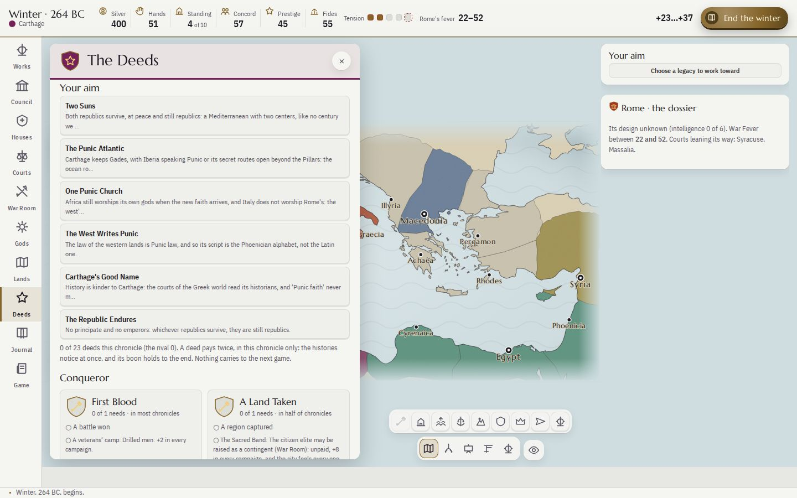
There are thirty deeds in eight styles. A few are deeds of the ending (Two Suns, The Republic Endures, The Punic Atlantic): judged as the chronicle closes, they bring honour in the legacy, not a boon. Every other one, once recorded, gives you a boon for the rest of the chronicle: a bonus in campaigns, a friendlier court, a cheaper colony, more Standing. A few hints, without spoiling the rest:
| Style | Some deeds | A hint |
|---|---|---|
| Conqueror | First Blood · A Land Taken · The Peace of Lutatius | The Peace of Lutatius is won at the peace table, not on the field: ask for the lands you fought over. |
| Barcid (Carthage) | New Carthage · The Silver Road · The Punic Atlantic | It all starts at Mastia, the silver country. |
| Merchant | A House Abroad · Six Harbors · The Merchant Peace · Two Suns | The first trading post is an easy deed and a lasting boon. |
| Patron | A Friend Among the Numidians · Patron of the West · The Leash | Protection first, clientship after. |
| Posturer | The Fold Drops · Just Claims · Righteous War | Just Claims rewards patience: stand firm when you're right, again and again. |
| Priest | A Temple Built · Pax Deorum · Evocatio | A temple is a work like any other. Start one early. |
| Republican | A Vote Carried · The United City · The Republic Endures | Win a close vote by lobbying and the histories notice. |
| Colonist · Kingmaker | Settlers · The Latin Name · A King's Ear · Philip's Pact | A great power joining your war is rare. Court it for years. |
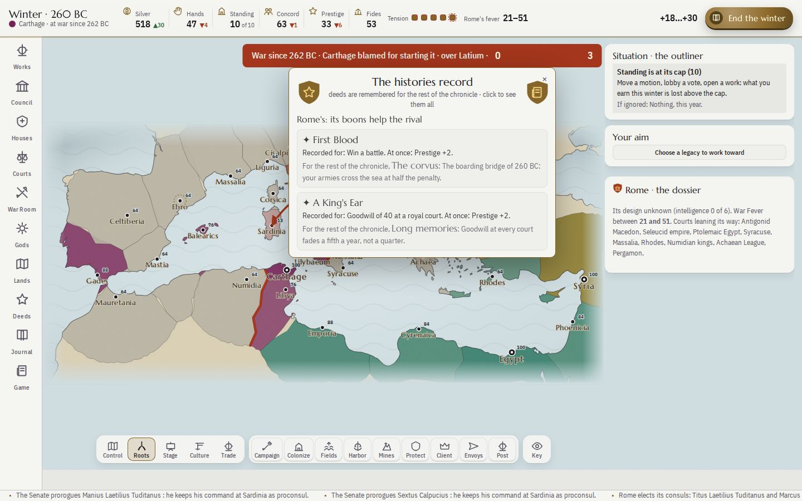
The outliner names the deed you're closest to ("One step from…"). An easy early deed is often worth a detour for its boon.
Watching the story
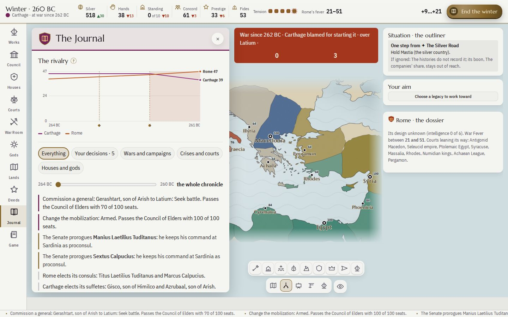
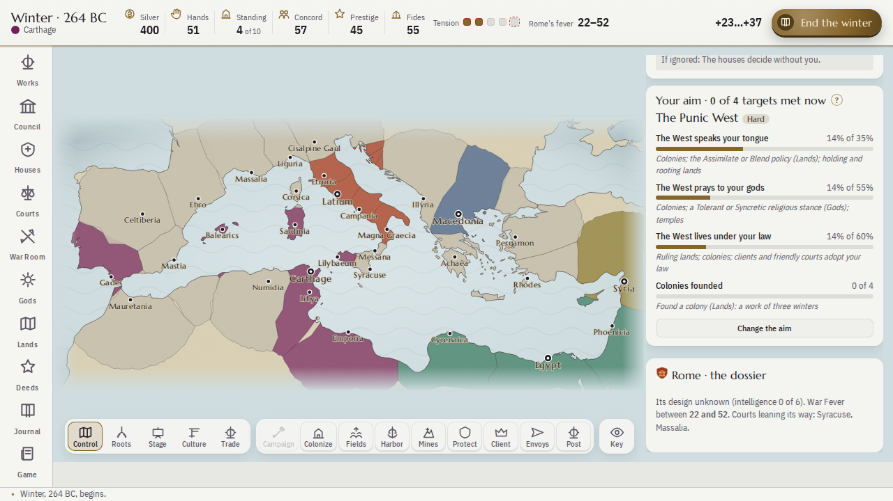
The ending
The legacy is sealed until the chronicle ends. Then it comes as a sequence: the title of your age, the Chronicle's judgment, the eras to AD 2000, the year 2000 itself, and the hinges (the moments that turned it).


The aims NEW
An aim is an ambition for the chronicle: a focus with three or four targets, measured as you play (not guessed from the far future), each with the lever that moves it. It is a compass, not a score. It changes nothing in play, and the rival never knows it. When the chronicle ends, the judgment tells you whether you reached it. Choose one in the Deeds view. The difficulty says how often the computer gets there without even aiming for it.
| Focus | Aim | The targets | Difficulty |
|---|---|---|---|
| Culture | The Punic West / The Latin West | The West speaks your tongue, prays to your gods and lives under your law; colonies founded | Hard |
| Conquest | Mistress / Master of the Middle Sea | Lands held; Sicily and Sardinia; a peace that cedes land to you | Hard |
| Wealth | The Merchant Republic | Income a year; levels of fields, harbors and mines | Moderate |
| Friends | Patron of the West | Loyal clients; peoples under your protection; watching powers on your side | Hard |
| Good name | Carthage's Good Name / Roman Faith | Fides; Prestige; the world reads your historians | Moderate |
| Peace | Two Suns | Both capitals stand; forty years at peace; Concord; still a republic | Moderate |
| Destruction | Roma Deleta / Delenda Est | The enemy's city taken, and still a republic after it | Very hard |
| The ocean (Carthage) | The Punic Atlantic | Gades and Mastia; Iberia speaks Punic; mines in Iberia; secret routes | Very hard |
| Blending (Rome) | Afro-Roman Africa | African lands held or befriended; a Latin blend spoken; the Blend policy | Very hard |
Secrets and quick reference
What veterans of the Middle Sea wish someone had told them.
- Standing carries over. A quiet winter is an investment.
- Fear of the rival builds Concord; a perfect peace can split your city.
- A claim grows with every grievance. Quarrel patiently.
- The land you campaign in is the land you can take at the peace.
- Only a siege takes a capital.
- Colonists build their own fields more cheaply.
- Works in a client's land buy loyalty and tribute at once.
- Trading posts are also spies: enough of them reveal the rival's plan.
- The legacy counts people, not acres.
- Every deed's boon lasts the whole chronicle. Earn the easy ones early.
- Threatening at high Tension without an army.
- Ultimatums on weak claims (Fides, gone).
- Opening three works on a small purse, so all three stall.
- Promising protection you won't defend.
- Letting a war run on for a decade.
- As Carthage: arrears. As Rome: the allies after a defeat.
- Ignoring the Counsel, and the factions who gave it.
Glossary
Hover everything. Every number in Carthago has its reasons one hover away. When you wonder "why did that happen?", the answer is on the screen. If it isn't, that's worth a note in the playtest report.